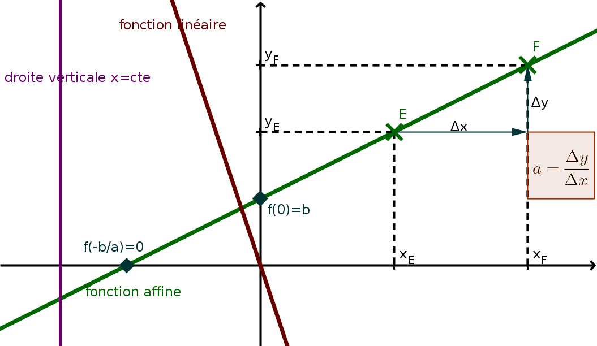
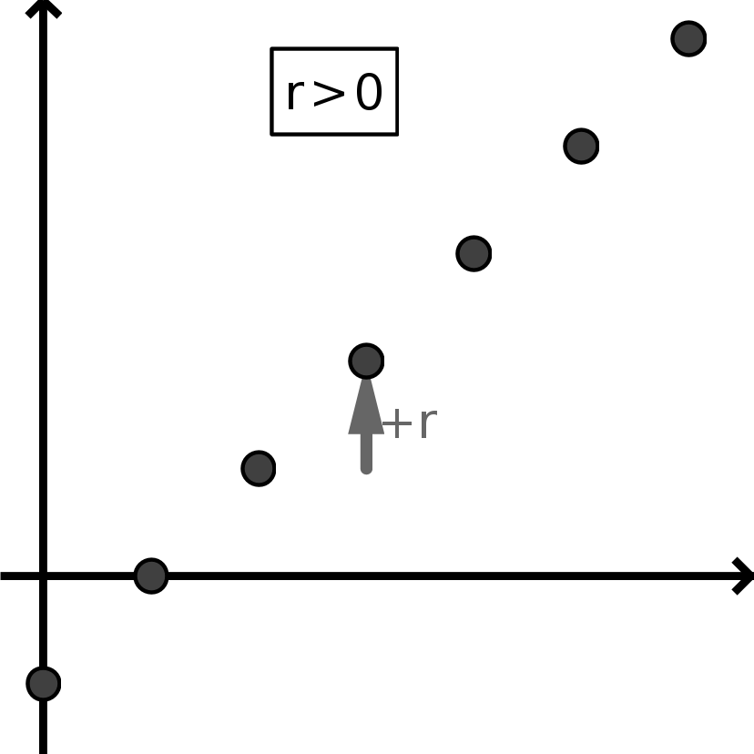
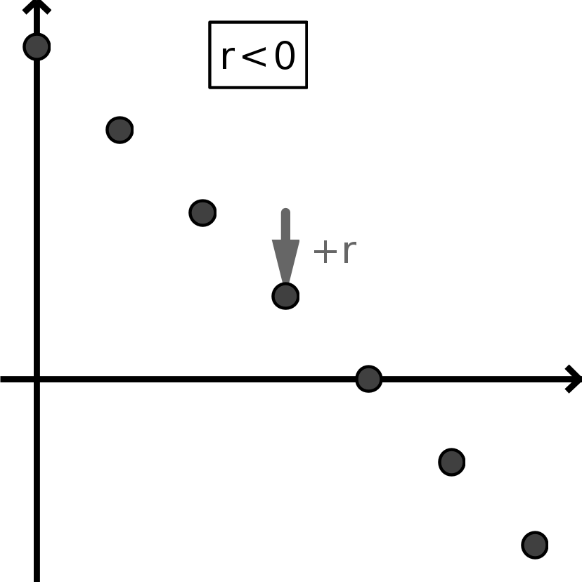
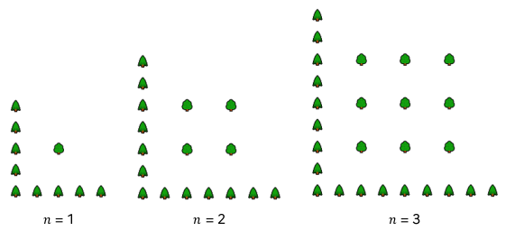

Une fonction \(f\) est dite affine lorsqu'elle s'écrit \(f(x)=ax+b\) (\(x\) est la variable et \(a\) et \(b\) deux constantes
fixées).
En outre :
\(a\) s'appelle le coefficient directeur ou la pente de
\(f\).
\(b\) s'appelle l' ordonnée à l'origine de \(f\).

\(b\) est la valeur de \(f\) pour \(x=0\). On lit donc \(b\) sur l'axe \((Oy)\) à l'intersection de cet axe
et
de la droite représentant \(f\).
Lorsque \(b=0\), on dit que \(f\) est une fonction linéaire : on a alors
\(f(x)=ax\) ; on passe de \(x\) à \(f(x)\) en multipliant par un nombre \(a\) fixé : \(f(x)\) et \(x\) sont
donc proportionnelles.
Les droites verticales, d'équation \(x=\)un nombre fixé, ne sont pas des fonctions. Toutes les autres droites du
plan sont des fonctions affines.
Variations
Les variations d'une fonction affine sont données directement par le signe de son coefficient directeur :
\(a>0\) lorsque \(f\) est strictement croissante ;
\(a=0\) lorsque \(f\) est constante (droite horizontale \(y=\,\)constante) ;
\(a<0\) lorsque \(f\) est strictement décroissante.
Donner les coefficients \(a\) et \(b\) ainsi que le le sens de variation des fonctions affines \(f(x)=2x+5\)
et \(g(x)=18-3x\)
Pour \(f\) : \(a=2\) et \(b=5\)
Pour \(g\) : \(a=-3x\) et \(b=18\)
Méthodes
Calcul de \(a\) :
On repère deux points \(E\) et \(F\) sur la droite, et on calcule la pente :
\(a=\frac{\Delta y}{\Delta x}=\frac{y_F-y_E}{x_F-x_E}\)
\(\Delta x\) représente l'accroissement en \(x\) et \(\Delta y\) représente l'accroissement en \(y\)
correspondant lorsque l'on va de \(E\) vers \(F\).
Calcul de \(b\) :
On repère un point \(E\) sur la droite, on remplace \(x\) et \(f(x)\) par les
coordonnées \(x_E\) et \(y_E\) de \(E\), et :
ou bien on résout rapidement pour trouver \(b\) :
\(y_E=ax_E+b~~\Leftrightarrow~~y_E-ax_E=b\) ;
ou bien on écrit \(y=a(x-x_E)+y_E\) et on développe et on simplifie.
Bien sûr, on contrôle que la valeur de \(b\) obtenue par le calcul est bien celle lue graphiquement sur
l'axe \((Oy)\).
On donne \(A(-2;-1)\), \(B(-2;2)\) et \(C(3;1)\).
Calculer les équations des droites \((AB)\), \((AC)\) et \((BC)\) et dire lesquelles
correspondent à des fonctions affines.
Équation \(ax+b=0\) et \(ax+b=\textrm{cte}\)
Une fonction affine s'annule en \(x=\frac{-b}{a}\).
Résoudre :
\(2x+5=0\) ;
\(18-3x=0\) ;
Résoudre :
\(2x+5=29\) ;
\(-3x+18=-9\)
Degrés Celsius et Fahrenheit
Beaucoup de pays anglos-saxons utilisent le degré Fahrenheit (°F).
Pour eux, l'eau bout à 212°F et gèle à 32°F.
On note \(x\) une mesure de température en degrés Celsius (°C) et \(f(x)\) la mesure de température
correspondante en degrés Fahrenheit.
On sait que \(f\) est une fonction affine.
Écrire les données de l'énoncé sous la forme \(f(\ldots)=\ldots\)
En déduire l'expression de la fonction \(f\).
Quelle est la température du corps humain en °F ?
Exprimer le zéro absolu (-273,15°C) en °F.
100°F est-elle une température supportable ?
Existe-t-il une température qui s'écrit avec le même nombre en °C et en °F ?
Élévation du niveau de la mer
Des observations par satellite ont permis d'établir qu'entre 1993 et 2023, le niveau moyen global des mers a
augmenté de 0,10m.
En considérant que l'augmentation est linéaire, calculer l'élévation du niveau de la mer entre 2023 et
2050.
En considérant que l'augmentation est linéaire, combien de temps faudrait-il pour qu'une élévation de 1m
se produise ?
Des relevés historiques notent une élévation de 0,20m entre 1901 et 2018.
Peut-on réellement faire confiance au modèle linéaire ?
Offre et demande
Un constructeur automobile fabrique un nouveau modèle de voitures électriques.
Le prix de vente \(v(x)\), en euros, d’un véhicule dépend du nombre de véhicules susceptibles d’être
vendus par mois.
Cette fonction s’appelle la fonction d’offre ; elle est définie par \(v(x) = 0.5x + 6000\).
Le prix d’achat d’un véhicule dépend du nombre de véhicules d’être achetés par mois.
Cette fonction s’appelle la fonction demande ; elle est définie par \(d(x) = −0.375x + 13000\) .
Représenter les fonctions d’offre et de demande.
Il suffit de les saisir dans la boîte de saisie (à gauche ou en bas).
Pour zoomer : on utiliser l'outil loupe ou bien la molette de la souris.
Pour contracter/dilater l'échelle sur les axes : cliquer sur l'axe choisi et en maintenant enfoncé le
bouton, déplacer la souris dans la direction de l'axe.
Quel est le sens de variation de la fonction d’offre ? Quel est celui de la fonction de demande ?
On appelle prix d’équilibre le prix pour lequel l’offre est égale à la demande.
Déterminer graphiquement
les coordonnées du point d’intersection de deux droites et en déduire le point d’équilibre.
Sur Géogébra : cliquer sur l'intersection (ou bien dans le menu point, sélectionner «intersection» et
cliquer sur une droite puis sur l'autre).
Vérifier le prix d'équilibre conjecturé par un calcul à la main.
Suites et suites arithmétiques
Suites : cas général
Intuitivement, une suite numérique est une liste infinie de nombres (réels), que l'on «numérote» par des
indices entiers (en commençant par par un indice de 0 ou de 1).
Une suite \(u\) (comment est-elle construite ?) :
\(u_0=5\) ; \(u_1=10\) ; \(u_2=7{,}5\) ; \(u_3=8{,}75\) ; \(u_4=8{,}125\)
Une suite est une fonction de \(\mathbb{N}\) (ensemble des entiers naturels) vers \(\mathbb{R}\)
(ensemble des
nombres réels) : elle fait correspondre, à des indices entiers, des nombres réels.
Notation : On note \((u_n)\) (avec des parenthèses) la suite \(u_1~;~u_2~;~u_3~;~...\),
ou plus simplement \(u\).
Le nombre \(u_n\) est appelé le \(n\)-ième terme de la suite \((u_n)\). On peut aussi
dire «terme de rang (ou indice) \(n\)».
On note \((u_n)\) la suite des nombres pairs et \((v_n)\) la suite des nombres impairs.
Trouver une formule donnant les termes généraux \(u_n\) et \(v_n\) en fonction de \(n\).
Dans les deux cas, quelle est la «règle» qui permet de passer d'un terme au suivant ?
Suites arithmétiques
Une suite \((u_n)\) est arithmétique
s'il existe un réel \(r\) (indépendant de \(n\)) tel que pour tout rang \(n\), on a\(u_{n+1}=u_n+r\)
Le réel \(r\) s'appelle la raison de la suite.
On passe d'un terme de la suite au suivant en ajoutant un même nombre \(r\) appelé la
raison de
la suite ; attention : \(r\) peut être négatif.

suite croissante (\(r>0\))

suite décroissante (\(r<0\))
Si \(r>0\), la suite est strictement croissante et croît vers \(+\infty\) ;
Si \(r=0\), la suite est constante (toujours égale à \(u_0\)) ;
Si \(r<0\), la suite est strictement décroissante et décroît vers \(-\infty\).
Une suite arithmétique \((u_n)\) correspond aux valeurs prises par une fonction affine \(f(x)=ax+b\) pour
\(x=n\), c'est à dire pour des valeurs entières de \(x\) ; en outre, on a \(a=r\) et \(b=u_0\) (cf les
graphiques précédents).
On en déduit que pour tout entier \(n\), on a \(u_n = u_0 + rn\), ou (en partant de
\(n=1\)), \(u_n = u_1 + r(n-1)\).
\(u\) est la suite arithmétique : 2;7;12;17;... Écrire \(u_n\) en fonction de \(n\).
Calculer \(u_{100}\).
\(v\) est une suite arithmétique dont la raison est 8 et \(v_{50}=100\). Que vaut \(v_0\) ?
Modéliser avec des suites arithmétiques
Intérêts simples
En partant de 100€ d'économies et en ajoutant 15€ par mois, quelle somme est mise de côté en deux ans ?
Identifier le terme initial et la raison de cette suite. En combien de temps atteint-on 300€ ?
Un fermier plante des pommiers en carré. Afin de protéger ces arbres contre les vents dominants, il
plante des conifères sur deux côtés du verger.
Ci-contre, figurent les dispositions des pommiers et des conifères pour \(n\) de 1 à 3.
Combien de conifères seront utiles pour protéger 25 pommiers
Combien de conifères seront utiles pour protéger 25 rangées de pommiers
Combien de rangées de pommiers peut-on protéger avec 500 conifères ?

Patterns
Chaque encadré présente un motif évolutif pour les cas \(n=0\), \(n=1\) et \(n=2\). Pour chacun :
Dessiner le cas \(n=3\).
Trouver une expression permettant de calculer le nombre de points en fonction de \(n\) quelconque (ou
bien à minima pour \(n=10\)).